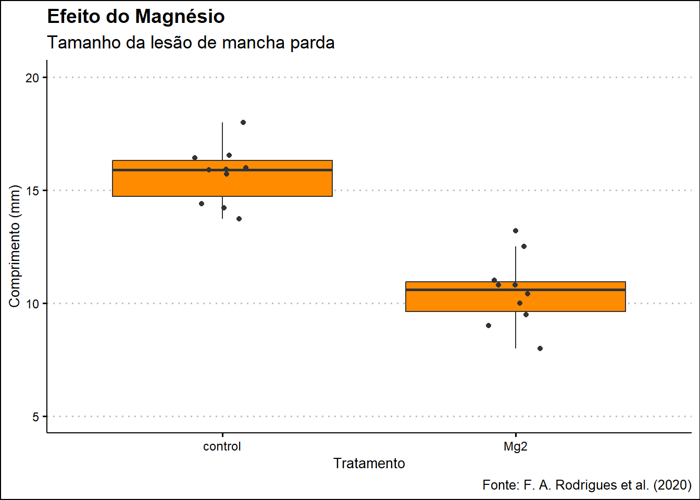
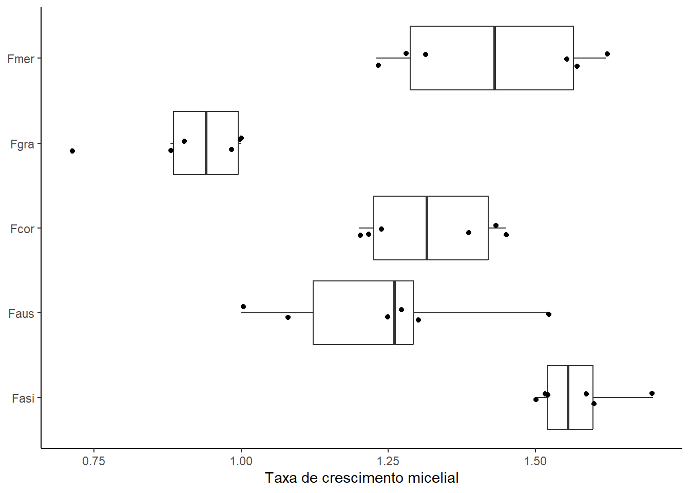
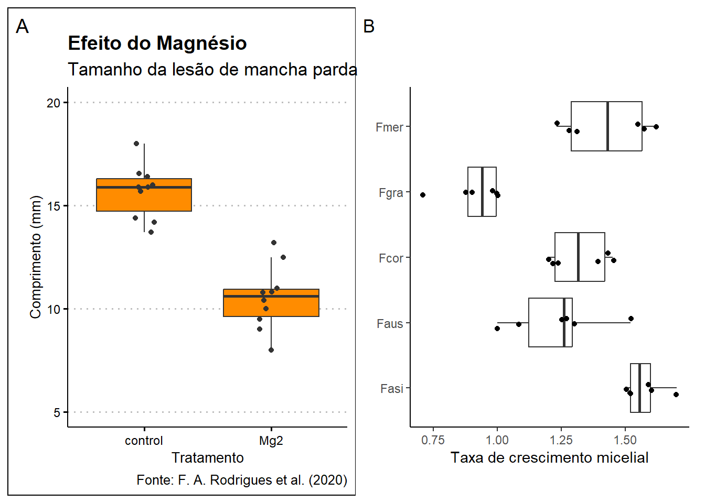

# Carregamento dos pacotes utilizados nesta aula
library(tidyverse) # Manipulação de dados, gráficos e funções do tipo pipe (%>%)
library(readxl) # Leitura de planilhas Excel (.xlsx)
library(gsheet) # Importação de planilhas do Google Sheets
library(janitor) # Tabelas de contingência e limpeza de nomes de colunas
library(ggthemes) # Temas adicionais para gráficos ggplot2
library(patchwork) # Combinação de múltiplos gráficos ggplot em uma única visualizaçãoCarregando dados e pacotes no ambiente R
Carregamento e Exploração de Dados no R
Nesta aula, revisitamos o workflow reprodutível para importar, explorar e preparar conjuntos de dados no R. Abordaremos desde a configuração do ambiente até a combinação de gráficos, com exemplos práticos em tidyverse, readxl, gsheet, janitor, ggplot2 e patchwork.
Configuração do Ambiente
Antes de iniciar qualquer análise, precisamos garantir que todos os pacotes necessários estejam instalados e carregados no R. Esse passo assegura a reprodutibilidade do projeto e evita erros de carregamento durante a renderização do documento.
1. Leitura de Arquivos Excel com readxl
Para trabalhar com dados provenientes de planilhas do Excel, usamos o pacote readxl. Podemos ler uma ou várias abas, seja pelo nome ou pela posição, e em seguida inspecionar a estrutura dos dados.
# Lê a primeira aba da planilha Excel
dados <- read_excel("dados-diversos.xlsx")
# Visualizar estrutura dos dados
str(dados)tibble [405 × 13] (S3: tbl_df/tbl/data.frame)
$ farm : num [1:405] 1 2 3 4 5 6 7 8 9 10 ...
$ region : chr [1:405] "SNNPR" "SNNPR" "SNNPR" "SNNPR" ...
$ zone : chr [1:405] "Bench Maji" "Bench Maji" "Bench Maji" "Bench Maji" ...
$ district : chr [1:405] "Debub Bench" "Debub Bench" "Debub Bench" "Debub Bench" ...
$ lon : num [1:405] 35.4 35.4 35.4 35.4 35.4 ...
$ lat : num [1:405] 6.9 6.9 6.9 6.9 6.9 ...
$ altitude : num [1:405] 1100 1342 1434 1100 1400 ...
$ cultivar : chr [1:405] "Local" "Mixture" "Mixture" "Local" ...
$ shade : chr [1:405] "Sun" "Mid shade" "Mid shade" "Sun" ...
$ cropping_system: chr [1:405] "Plantation" "Plantation" "Plantation" "Plantation" ...
$ farm_management: chr [1:405] "Unmanaged" "Minimal" "Minimal" "Unmanaged" ...
$ inc : num [1:405] 86.7 51.3 43.2 76.7 47.2 ...
$ sev2 : num [1:405] 55.58 17.9 8.25 46.1 12.25 ...glimpse(dados)Rows: 405
Columns: 13
$ farm <dbl> 1, 2, 3, 4, 5, 6, 7, 8, 9, 10, 11, 12, 13, 14, 15, 16,…
$ region <chr> "SNNPR", "SNNPR", "SNNPR", "SNNPR", "SNNPR", "SNNPR", …
$ zone <chr> "Bench Maji", "Bench Maji", "Bench Maji", "Bench Maji"…
$ district <chr> "Debub Bench", "Debub Bench", "Debub Bench", "Debub Be…
$ lon <dbl> 35.44250, 35.44250, 35.42861, 35.42861, 35.42861, 35.3…
$ lat <dbl> 6.904722, 6.904722, 6.904444, 6.904444, 6.904444, 6.90…
$ altitude <dbl> 1100, 1342, 1434, 1100, 1400, 1342, 1432, 1100, 1400, …
$ cultivar <chr> "Local", "Mixture", "Mixture", "Local", "Local", "Mixt…
$ shade <chr> "Sun", "Mid shade", "Mid shade", "Sun", "Sun", "Mid sh…
$ cropping_system <chr> "Plantation", "Plantation", "Plantation", "Plantation"…
$ farm_management <chr> "Unmanaged", "Minimal", "Minimal", "Unmanaged", "Unman…
$ inc <dbl> 86.70805, 51.34354, 43.20000, 76.70805, 47.15808, 51.3…
$ sev2 <dbl> 55.57986, 17.90349, 8.25120, 46.10154, 12.25167, 19.91…# Lê a aba "sensibilidade_fungicidas" pelo nome
dados_sens <- read_excel(
path = "dados-diversos.xlsx",
sheet = "sensibilidade_fungicidas"
)
# Conferir estrutura e tipos
str(dados_sens)tibble [240 × 9] (S3: tbl_df/tbl/data.frame)
$ code : chr [1:240] "FGT05" "FGT05" "FGT05" "FGT05" ...
$ year : num [1:240] 2007 2007 2007 2007 2007 ...
$ trial : num [1:240] 1 1 1 1 1 1 1 1 1 1 ...
$ state : chr [1:240] "RS" "RS" "RS" "RS" ...
$ dose : chr [1:240] "0.0" "0.0" "0.05" "0.05" ...
$ replicate : num [1:240] 1 2 1 2 1 2 1 2 1 2 ...
$ germination: num [1:240] 46 44 18 24 9 11 0 0 0 0 ...
$ ...8 : logi [1:240] NA NA NA NA NA NA ...
$ ...9 : logi [1:240] NA NA NA NA NA NA ...glimpse(dados_sens)Rows: 240
Columns: 9
$ code <chr> "FGT05", "FGT05", "FGT05", "FGT05", "FGT05", "FGT05", "FGT…
$ year <dbl> 2007, 2007, 2007, 2007, 2007, 2007, 2007, 2007, 2007, 2007…
$ trial <dbl> 1, 1, 1, 1, 1, 1, 1, 1, 1, 1, 1, 1, 1, 1, 1, 1, 1, 1, 1, 1…
$ state <chr> "RS", "RS", "RS", "RS", "RS", "RS", "RS", "RS", "RS", "RS"…
$ dose <chr> "0.0", "0.0", "0.05", "0.05", "0.5", "0.5", "1.0", "1.0", …
$ replicate <dbl> 1, 2, 1, 2, 1, 2, 1, 2, 1, 2, 1, 2, 1, 2, 1, 2, 1, 2, 1, 2…
$ germination <dbl> 46, 44, 18, 24, 9, 11, 0, 0, 0, 0, 0, 0, 50, 50, 43, 44, 2…
$ ...8 <lgl> NA, NA, NA, NA, NA, NA, NA, NA, NA, NA, NA, NA, NA, NA, NA…
$ ...9 <lgl> NA, NA, NA, NA, NA, NA, NA, NA, NA, NA, NA, NA, NA, NA, NA…# Converter coluna dose para numérico (remove texto, converte)
dados_sens <- dados_sens %>%
mutate(
dose = readr::parse_number(dose)
)# Lê a terceira aba pelo índice (caso o nome mude)
dados3 <- read_excel(
path = "dados-diversos.xlsx",
sheet = 3
)
# Exploração rápida
str(dados3)tibble [240 × 9] (S3: tbl_df/tbl/data.frame)
$ code : chr [1:240] "FGT05" "FGT05" "FGT05" "FGT05" ...
$ year : num [1:240] 2007 2007 2007 2007 2007 ...
$ trial : num [1:240] 1 1 1 1 1 1 1 1 1 1 ...
$ state : chr [1:240] "RS" "RS" "RS" "RS" ...
$ dose : chr [1:240] "0.0" "0.0" "0.05" "0.05" ...
$ replicate : num [1:240] 1 2 1 2 1 2 1 2 1 2 ...
$ germination: num [1:240] 46 44 18 24 9 11 0 0 0 0 ...
$ ...8 : logi [1:240] NA NA NA NA NA NA ...
$ ...9 : logi [1:240] NA NA NA NA NA NA ...glimpse(dados3)Rows: 240
Columns: 9
$ code <chr> "FGT05", "FGT05", "FGT05", "FGT05", "FGT05", "FGT05", "FGT…
$ year <dbl> 2007, 2007, 2007, 2007, 2007, 2007, 2007, 2007, 2007, 2007…
$ trial <dbl> 1, 1, 1, 1, 1, 1, 1, 1, 1, 1, 1, 1, 1, 1, 1, 1, 1, 1, 1, 1…
$ state <chr> "RS", "RS", "RS", "RS", "RS", "RS", "RS", "RS", "RS", "RS"…
$ dose <chr> "0.0", "0.0", "0.05", "0.05", "0.5", "0.5", "1.0", "1.0", …
$ replicate <dbl> 1, 2, 1, 2, 1, 2, 1, 2, 1, 2, 1, 2, 1, 2, 1, 2, 1, 2, 1, 2…
$ germination <dbl> 46, 44, 18, 24, 9, 11, 0, 0, 0, 0, 0, 0, 50, 50, 43, 44, 2…
$ ...8 <lgl> NA, NA, NA, NA, NA, NA, NA, NA, NA, NA, NA, NA, NA, NA, NA…
$ ...9 <lgl> NA, NA, NA, NA, NA, NA, NA, NA, NA, NA, NA, NA, NA, NA, NA…2. Importação de Arquivos CSV com readr
Arquivos CSV são frequentemente usados para intercâmbio de dados. Com readr, podemos importar e visualizar rapidamente esses arquivos. Caso não haja CSV neste momento, mantenha o chunk comentado para referência futura.
# Caso tenha arquivos CSV, use read_csv
# curve <- read_csv("curve.csv")
# glimpse(curve)3. Importação de Planilhas Online (Google Sheets)
Para manter dados atualizados na nuvem, importamos planilhas do Google Sheets diretamente no R. Isso facilita a colaboração e atualizações em tempo real, sem precisar baixar manualmente arquivos.
# Definir URL base da planilha
gsheet_url <- "https://docs.google.com/spreadsheets/d/1bq2N19DcZdtax2fQW9OHSGMR0X2__Z9T"
# Importa diferentes abas conforme o gid
survey <- gsheet2tbl(paste0(gsheet_url, "/edit?gid=1118819738"))
datamg <- gsheet2tbl("https://docs.google.com/spreadsheets/d/1bq2N19DcZdtax2fQW9OHSGMR0X2__Z9T/edit?gid=983033137#gid=983033137")
micelial <- gsheet2tbl("https://docs.google.com/spreadsheets/d/1bq2N19DcZdtax2fQW9OHSGMR0X2__Z9T/edit?gid=959387827#gid=959387827")4. Exploração de Dados com dplyr e janitor
Depois de carregar os dados, realizamos verificações iniciais: contagens, agrupamentos, filtros e tabelas de contingência. Essas etapas ajudam a compreender a distribuição e possíveis inconsistências nos conjuntos.
# Contagens simples (OBS: Diferente da aula, não rodou a aula)
tab_state <- survey |> count(state)
tab_species <- survey |> count(species)
tab_residue <- survey |> count(residue)
# Agrupamento múltiplo
tab_multi <- survey |>
group_by(state, residue, species) |>
count() |>
ungroup()
# Filtros por estado
RS <- survey |> filter(state == "RS")
PR <- survey |> filter(state == "PR")
# Combina RS e PR verticalmente
combinado <- rbind (RS, PR)
# Tabela de contingência (frequency table)
survey |> tabyl(state, species) state Fgra Fspp
PR 150 66
RS 402 485. Visualizações com ggplot2
Visualizar dados é fundamental para identificar padrões e outliers. Usamos ggplot2 para criar boxplots e dispersões, acrescentando temas que melhoram a comunicação visual.
5.1. Boxplot: Efeito do Magnésio
plot_mg <- datamg %>%
ggplot(aes(x = trat, y = comp)) +
geom_boxplot(fill = "darkorange", outlier.color = NA) +
geom_jitter(width = 0.1, color = "gray20") +
scale_y_continuous(limits = c(5, 20)) +
labs(
x = "Tratamento",
y = "Comprimento (mm)",
title = "Efeito do Magnésio",
subtitle = "Tamanho da lesão de mancha parda",
caption = "Fonte: F. A. Rodrigues et al. (2020)"
) +
theme_clean()
plot_mg
5.2. Boxplot: Crescimento Micelial
plot_micelial <- micelial %>%
ggplot(aes(x = especie, y = tcm)) +
geom_boxplot(outlier.color = NA) +
geom_jitter(width = 0.1) +
coord_flip() +
labs(
x = NULL,
y = "Taxa de crescimento micelial"
) +
theme_classic()
plot_micelial
6. Combinação de Gráficos com patchwork
Por fim, combinamos múltiplas visualizações para apresentações comparativas, adicionando anotações de painel e salvando em alta resolução.
combo_plot <- plot_mg + plot_micelial +
plot_annotation(tag_levels = "A")
# Exibe o layout combinado
combo_plot
# Salvar figura combinada em alta resolução
ggsave(
filename = "combo_plot.png",
plot = combo_plot,
bg = "white",
width = 8,
height = 4
)OBSERVAÇÕES:
Arquivos CSV devem estar no formato americano (ponto como separador decimal);
Pode-se definir isso ao exportar do Excel ou configurar na leitura.